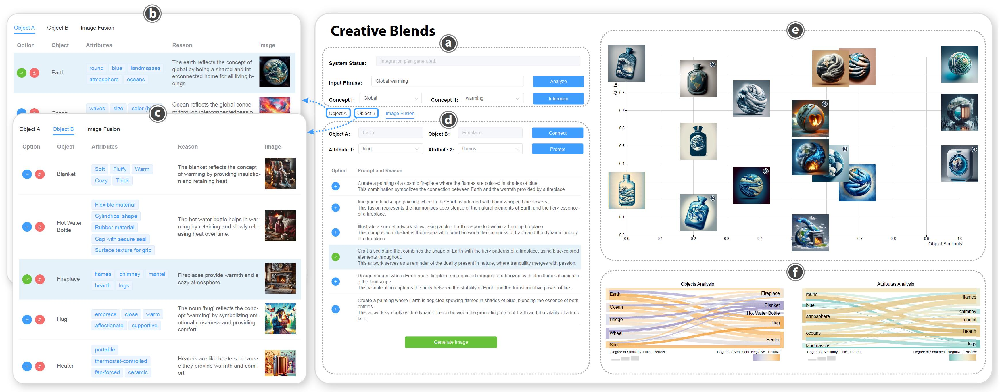

The Creative Blends pipeline
Creative Blends operates through a multi-stage pipeline. The initial stage involves concept inference to identify relevant objects and their attributes. Subsequently, a similarity-based selection process empowers users to choose suitable object and attribute combinations. The system then explores potential blending schemes and synthesizes corresponding prompts for the T2I model, culminating in iterative image generation based on the selected prompts to support the ideation process.
The Creative Blends system
Creative Blends utilizes interactive visualizations to enable user exploration of generated visual blends. The system's interface is organized into four modules: expression input, prompt exploration, visual blend exploration, and similarity visualization.
The user interface of Creative Blends showcases an example of generated results for “global warming”. The interface consists of four distinct modules: the expression input module (a), the prompt exploration module (b, c, d), the visual blend exploration module (e), and the similarity visualization module (f).
The scheme generation prompt is structured into five distinct modules: system setup, task definition, user input, a step-by-step execution process, and a results format demonstration.
The resulting schemes are then utilized to construct a final prompt for the DALL·E 3 model. This final prompt incorporates objects, attributes, schemes, and contextual considerations, with the schemes and metaphorical themes dynamically generated by GPT.
Evaluation Methods
A within-subjects study with 24 participants was conducted to evaluate Creative Blends against a baseline comprising ChatGPT and Google Search.
Results
User ratings were collected across five dimensions: Usability, Cognitive Load, Outcome Satisfaction, Creativity, and Metaphoricity. Statistical analysis of these ratings revealed that Creative Blends significantly outperformed the baseline in Creativity, Metaphoricity, and overall user experience, demonstrating its efficacy in generating visually compelling ideas for abstract concepts.
The statistical results of user feedback with the Creative Blends and the baseline.
Creative Blends generates diverse visual blends representing abstract concepts based on user-provided expressions. Each topic includes eight examples: four highlighting different levels of object similarity and four demonstrating varying attribute similarity. Similarity increases from left to right. The attributes are extended based on the objects enclosed by the double brackets. Colors within the topics serve to identify concepts and their associated objects and attributes.

The Sample ideas generated by Creative Blends. These examples are randomly selected from the topics used in previous research or commonly used in our daily lives.
Reflection
In summary, this research proposes a novel metaphor-based visual blending approach , leveraging commonsense reasoning to identify semantically relevant objects and subsequently synthesize them based on attribute similarity. We present Creative Blends, an AI-assisted system designed to enhance creative ideation in visual blending through the use of metaphors. Through a comprehensive evaluation, we demonstrate how metaphors can facilitate abstract concept design in AIGC, enhancing creative workflows and visual ideation.